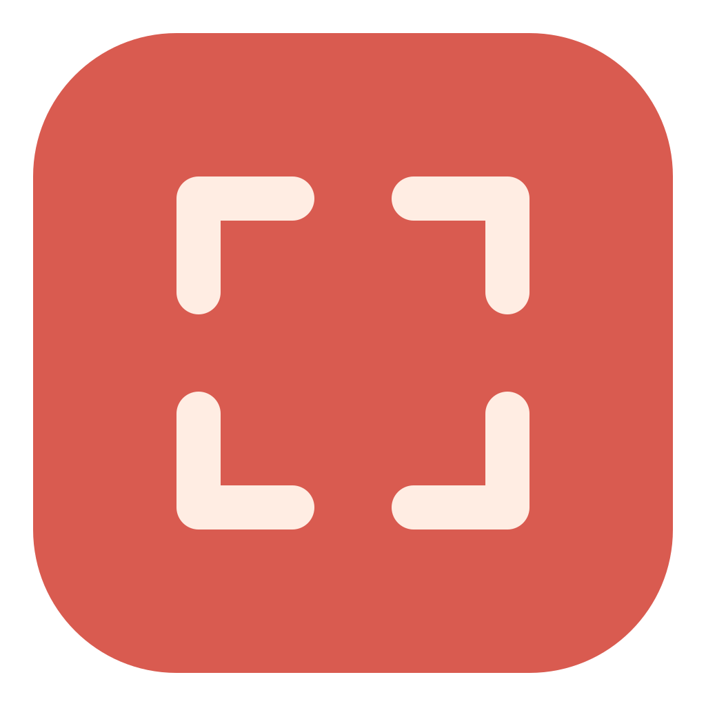

More than a pointer.
Keep several areas in focus at once. Show the connection between details, even when they’re far apart.

FokaPREVIEWA little focus goes a long way
Your screen has a lot to say.
Help your audience see the part that matters.
For Mac & Windows • No changes to your slides
Click a focus area and drag to move it. Drag its white corners or side handles to resize. Click outside to deselect. Arrow keys move; Alt+arrow keys resize.
FOCUS IN PRACTICE
See how to highlight several areas, resize them and adjust the dimming with your mouse.
Playback trouble? Open the video separately ↗
Frame what matters in a lesson. Show several focus areas at once. Resize them with the corner and side handles and highlight the relationship between numbers in a chart. Read a text together and adjust the dimming with your mouse. Foka for Windows and Mac — foka.kodena.se.
THE POINT IS THE POINT
A crowded chart. A tiny detail. A map with too much going on. Sometimes a pointer just isn’t enough.
Foka sits over your screen, softly dims the surroundings and leaves selected areas clear. Guide attention without cropping, changing slides or breaking your flow.
Keep several areas in focus at once. Show the connection between details, even when they’re far apart.
Click to select. Drag to move. Resize with the handles. Double-click or right-click an area to remove it.
Show or hide the overlay with a shortcut. On Mac, you can edit the focus areas while Keynote’s presentation remains active.
LESS SETUP. MORE SHOWING.
Foka selects a suitable presentation display automatically. You can change it when needed.
Drag on the overlay to create a focus area. Add more, move them around and choose how dark the surroundings should be.
Show, hide and adjust the focus as your story unfolds. Press Esc to hide the overlay, or use Ctrl+Alt+Backspace (Mac: ⌘+⌥+Backspace) to hide and clear the areas for your next slide.
A SMALL APP. A CLEAR PURPOSE.
Foka doesn’t record your screen or need screen-recording permission. It doesn’t edit your presentation files.
No account, screen recording or changes to your slides. Just focus areas and adjustable dimming.
MAKE YOUR NEXT POINT CLEARER
Try the current evaluation builds for Mac or Windows.
Apple silicon · macOS 14 or later
Download for Mac DMG · Evaluation buildOpen the DMG, drag Foka to Applications, eject the disk image and start Foka. This test build is locally signed and not Apple-notarized. See the included instructions if macOS blocks the first launch.
Windows 11 x64 · No installer needed
Download for Windows ZIP · Evaluation buildExtract the ZIP and run Foka.exe. If Windows blocks this unsigned test build, use Properties → Unblock on the file.
These evaluation downloads are free. Find available packages and checksums in our public releases.
GOOD TO KNOW
No. Foka is a separate overlay on the selected screen. Your slides, PDF, map or browser content remain underneath it.
Tested with Keynote in presentation mode on the same display. When Keynote takes over both the main and external display, Foka may not appear above it. Use ⌘ + ⌥ + F to show or hide the overlay.
Yes. Create multiple rectangles, move or resize them. Click outside all rectangles to deselect them; drag there to create another.
No. Foka uses a transparent overlay and does not capture screen images.
The evaluation downloads here are free. The Microsoft Store edition is being prepared as a one-time purchase with a 30-day trial. No separate Foka account is required.
Focus attention.
Keep presenting.